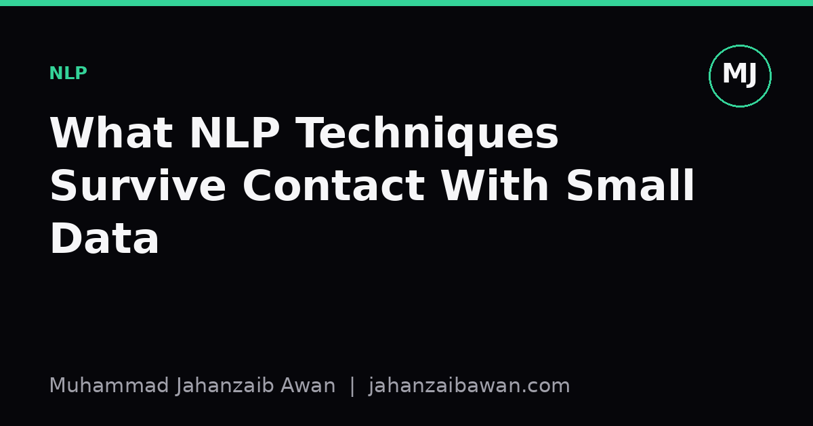

What NLP Techniques Survive Contact With Small Data
When you only have a few hundred labelled examples, most fashionable methods quietly fail. Here is what actually holds up, and why.

Why small data breaks the usual playbook
Most NLP tutorials assume you have tens of thousands of labelled examples, a GPU cluster, and the patience to fine-tune a large model until validation loss stops improving. In practice, a huge share of real projects arrive with something closer to three hundred labelled emails, four hundred support tickets, or a few hundred annotated clinical notes. That is not a rounding error away from the textbook case; it is a different regime with different failure modes, and pretending otherwise is how people end up with a model that reports ninety percent accuracy and then falls apart the moment it sees a slightly different phrasing.
The core problem is variance, not bias. With a small labelled set, your validation score itself is a noisy estimate. If you have eighty examples in your test fold and the model gets six more right than a baseline, that could easily be sampling noise rather than a genuine improvement. I have seen people chase a two point accuracy gain across five architectures on a hundred and fifty test examples, when the honest confidence interval around that gap was wider than the gap itself. Before asking which technique survives, it is worth accepting that with small data your first job is to make measurement trustworthy, because a fragile technique measured well is more useful than a good technique measured badly.
Given that constraint, some techniques cope well and some do not. Anything that needs to learn a large number of parameters from scratch, or that relies on the model discovering subtle statistical regularities across thousands of examples, tends to collapse into memorisation. Anything that lets you borrow structure or knowledge from elsewhere, and only asks the small labelled set to do a narrow, well-constrained job, tends to hold up. That distinction is the thread running through everything below.
What actually holds up
Transfer learning from a pretrained language model is the single most reliable technique in this regime, but only if you use it correctly. Fine-tuning the entire model on three hundred examples is asking for trouble, because you have far more parameters than data points and the model will happily memorise the training set while learning nothing generalisable. What works better in practice is freezing most of the network and only training a small classification head, or using parameter-efficient adaptation methods that update a tiny fraction of the weights. The pretrained representations already encode a great deal of general language structure; your small dataset only needs to teach the model where the decision boundary sits for your specific task, not how language works from first principles.
Linear models on top of strong pretrained embeddings are underrated. Take sentence embeddings from a pretrained encoder, freeze them completely, and train a logistic regression or a support vector machine on top. This sounds almost too simple next to fine-tuning, but with two or three hundred labelled examples it is often the more stable choice, because a linear model with a handful of parameters cannot overfit as aggressively as a full transformer can. I have watched a frozen-embedding logistic regression outperform a fully fine-tuned model on a genuinely small dataset, purely because the fine-tuned model had enough capacity to fit noise in the training split.
Careful feature engineering has not disappeared either, particularly for narrow, well-defined tasks. If you are classifying invoices by type, the presence of specific keywords, document length, and simple regex-based flags can do a surprising amount of work, and they generalise cleanly because they encode a rule rather than a learned statistical pattern that might be an artefact of your particular sample. These features are unglamorous, but unglamorous and robust beats sophisticated and brittle when your labelled set is small.
Data augmentation and weak supervision can extend a small set usefully, but only when applied with restraint. Back-translation, synonym substitution, and simple paraphrasing can multiply your effective training signal without introducing much noise, provided you check that the augmented examples still carry the correct label. Weak supervision, where you use heuristic rules or a larger unlabelled corpus to generate noisy labels that supplement your clean labelled set, can also help, but it needs to be validated against your genuine hand-labelled examples rather than trusted blindly, since noisy labels compound whatever biases the heuristics already had.

A worked example
Suppose you are building a classifier to flag customer complaints as urgent or not, and you have four hundred labelled examples. Split honestly: three hundred for training, fifty for validation, fifty for a held-out test set you touch exactly once. With numbers this small, stratify the split so the urgent and non-urgent classes appear in roughly the same proportion in each fold, otherwise you risk a validation set that happens to contain almost no urgent examples, which would make every model look artificially good.
Start with a frozen-embedding logistic regression as your baseline. Say it achieves seventy-eight percent accuracy on the validation fold. Then try fine-tuning a pretrained model with a low learning rate and early stopping based on validation loss; suppose that reaches eighty-one percent. A three point gain sounds meaningful, but with only fifty validation examples, that difference corresponds to roughly one and a half additional correct predictions. Run the comparison with five different random seeds for the train and validation split, and you might find the fine-tuned model wins in three out of five runs and loses in two, with the gap ranging from minus two points to plus five points. That tells you the improvement is real but small and uncertain, not the confident win a single run would suggest.
This is also where leakage sneaks in unnoticed. If any of your four hundred examples are near-duplicates, the same complaint submitted twice with minor wording changes, and one copy ends up in training while the other ends up in test, your test score will be inflated in a way that has nothing to do with genuine generalisation. With large datasets this kind of duplication barely moves the needle; with four hundred examples, a handful of duplicate pairs can shift your reported accuracy by several points. Checking for near-duplicates before splitting is not optional at this scale.
The practical takeaway
When labelled data is scarce, favour techniques that borrow structure rather than ones that learn it from scratch: frozen pretrained embeddings with a simple classifier on top, lightweight fine-tuning rather than full fine-tuning, and transparent rule-based features for narrow tasks. Treat data augmentation and weak supervision as useful extensions rather than substitutes for clean evaluation. Above all, spend at least as much effort on your evaluation protocol as on your modelling choices: stratified splits, checks for near-duplicate leakage, and multiple random seeds to see whether an apparent improvement survives resampling. A modest technique measured honestly will serve you far better than an impressive one measured on a fluke.